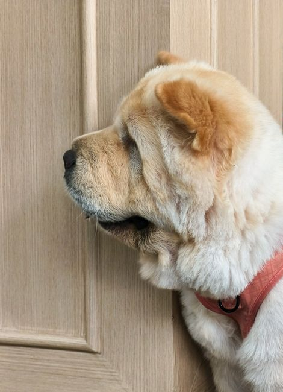
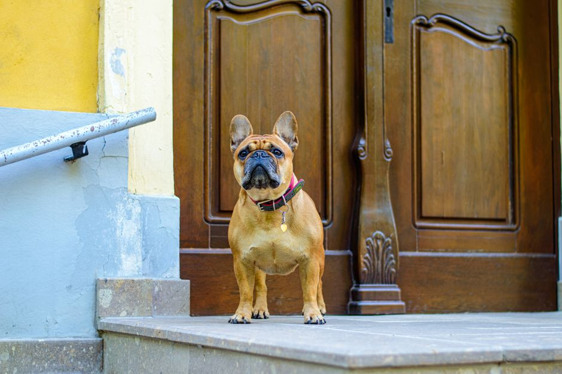
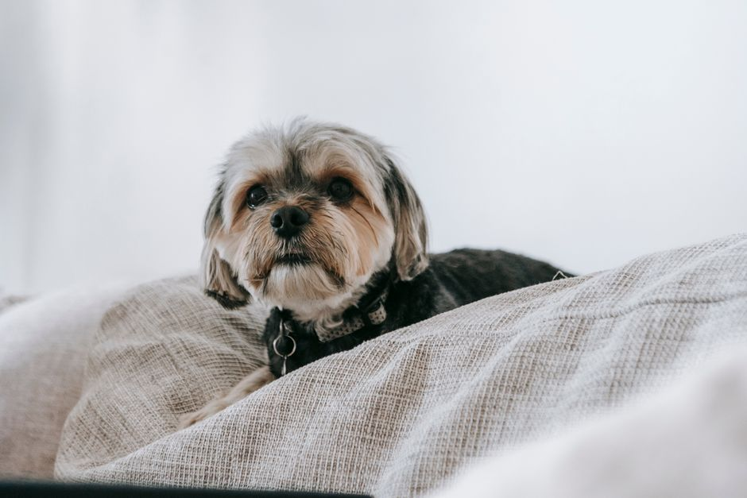
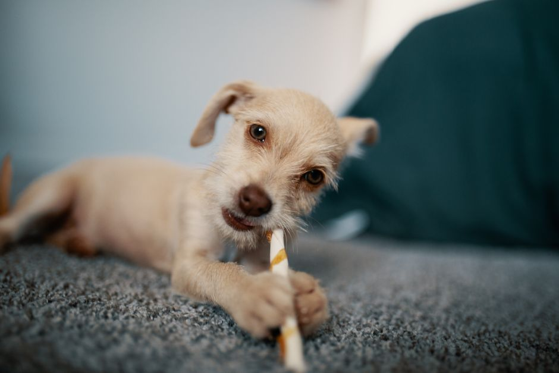
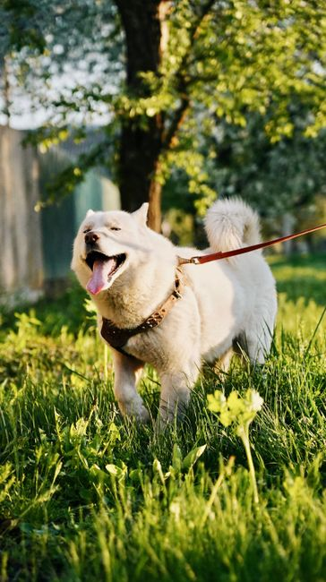

4 passos simples para ajudar seu cachorro a ficar tranquilo sozinho.

Como fazer

1
Saia sem alarde
Pegue as chaves e saia com calma, sem longas despedidas. Quanto mais normal, menos ele estranha.

⏱ 10 s
2
Comece com ausências curtas
Fique fora por poucos segundos e volte antes de ele chorar. Aumente o tempo aos poucos.

3
Deixe algo para ocupar
Um brinquedo recheável ou mordedor seguro mantém a mente dele ocupada enquanto você sai.

4
Gaste energia antes
Um passeio e uma brincadeira antes de sair ajudam o cachorro a ficar mais tranquilo em casa.
O que fazer
Mantenha uma rotina previsível de saídas e passeios.
Volte antes de ele ficar aflito e elogie quando estiver calmo.
Deixe um cantinho confortável e seguro.
O que evitar
Dar bronca ou castigo por causa do choro.
Fazer festa ou despedida longa ao sair e ao chegar.
Aumentar o tempo sozinho de uma vez só.
Dica extra: use uma câmera de monitoramento pet (câmera babá) para ver como ele reage enquanto você está fora, sem precisar ficar com o celular filmando. Assim você ajusta o tempo de ausência com segurança.
Aviso: este material é informativo e não substitui a consulta ao veterinário. Se o choro for muito intenso, houver destruição, xixi fora do lugar ou não melhorar, procure um veterinário ou adestrador.Fotos: Pexels (Kimy Moto, Péter Borkó, Sarah Chai, Josh Sorenson, Anastasia Ilina-Makarova).